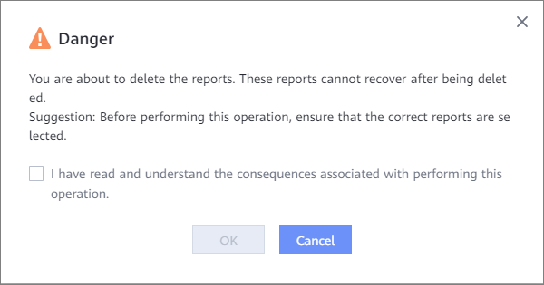

Deleting a Report
Procedure
- In the navigation pane, choose Reports.
- To delete a single report, click in the lower right corner of the report. To delete multiple reports in batches, select the security reports to be deleted and click Delete.
- In the dialog box that is displayed, confirm the information and click OK.

Copyright © Huawei Technologies Co., Ltd.